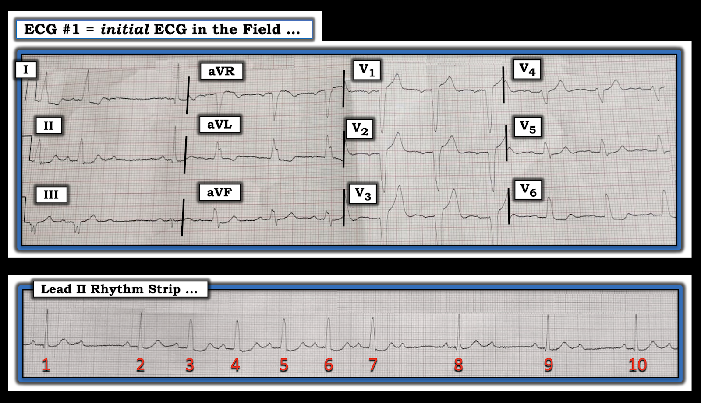
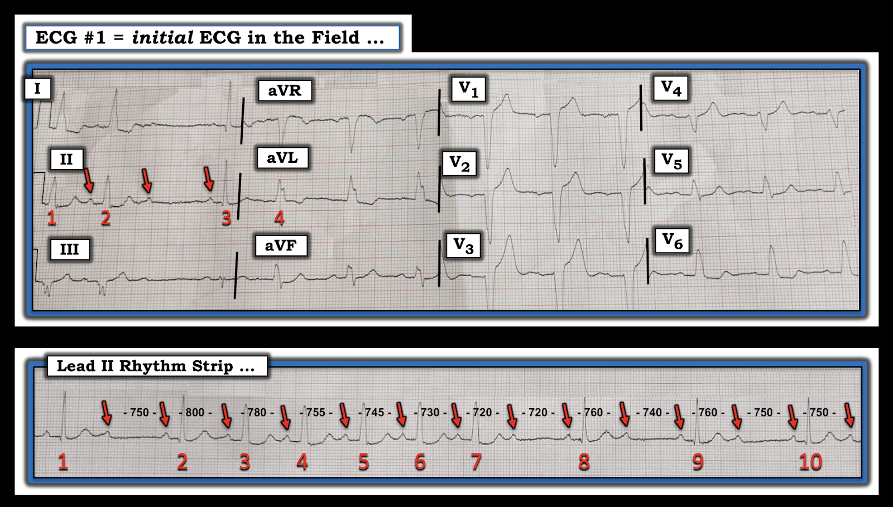
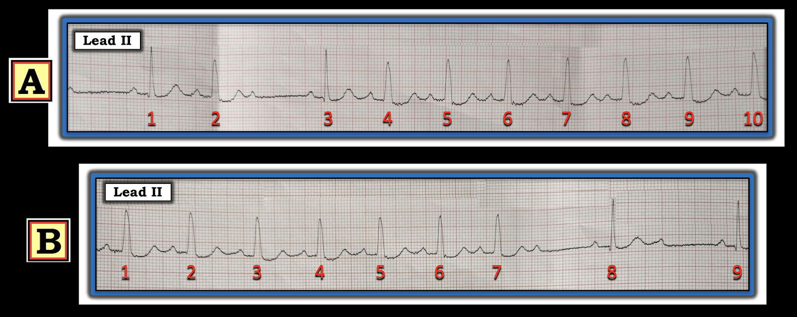
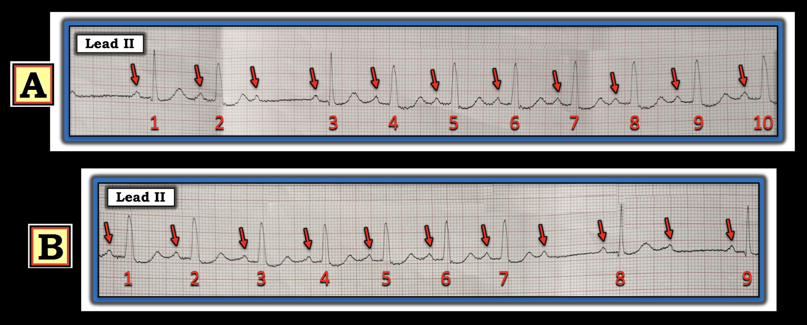

ECG Blog #242 — Vì sao có các nhát rộng? (Mobitz I hay II?)
Điện tâm đồ 12 chuyển đạo và dải nhịp chuyển đạo II dài trong Hình-1 được ghi từ một phụ nữ ngoài 60 tuổi, được đội cấp cứu ngoài viện EMS (Emergency Medical Services) tiếp nhận vì đau ngực và hồi hộp đánh trống ngực. Bệnh nhân ổn định huyết động vào thời điểm ghi điện tâm đồ và dải nhịp trong Hình-1.
CÂU HỎI:
- Bạn sẽ diễn giải các bản ghi trong Hình-1 như thế nào? Có nên kích hoạt phòng thông tim (cath lab) không?
- Đây là nhịp gì? Liệu bệnh nhân có khả năng cần máy tạo nhịp không?


=======================================
LƯU Ý: Đến đây, một số bạn đọc có thể muốn nghe ECG Audio PEARL dài 8:00 phút trước khi đọc Suy nghĩ của tôi về điện tâm đồ trong Hình-1. Bạn có thể tham khảo Suy nghĩ của tôi về bản ghi này bất cứ lúc nào (nằm bên dưới ECG MP-57).
=======================================

Hôm nay ECG Media PEARL #57 (8:00 phút Audio) — Thế nào là blốc nhánh liên quan tần số (rate-related Bundle Branch Block)? Nó khác với dẫn truyền "lệch hướng" (aberrant) như thế nào.
Cách tiếp cận ban đầu CỦA TÔI với điện tâm đồ trong Hình-1:
Tôi thấy đây là một ca rất thú vị — với những dấu hiệu quan trọng ở cả điện tâm đồ 12 chuyển đạo lẫn dải nhịp chuyển đạo II dài. TỐT NHẤT là bắt đầu từ nhịp.
- Như mọi khi — Hãy có hệ thống! Bắt đầu với dải nhịp chuyển đạo dài bằng cách xem xét 5 thông số MẤU CHỐT trong Cách tiếp cận Ps, Qs & 3Rs (Xem ECG Blog #185).
- Xin nhấn mạnh: Không nhất thiết phải đánh giá 5 thông số theo một trình tự cụ thể nào (tức là, tôi thường xem độ rộng QRS hoặc tính đều của nhịp trước khi tìm sóng P — tùy xem thông số nào trong 5 thông số là dễ đánh giá nhất trên bản ghi đang có).
ĐIỂM THEN CHỐT (PEARL) #1: Khi đối mặt với một rối loạn nhịp khó như ca này, trong đó có những phần khó và những phần dễ diễn giải hơn — Hãy bắt đầu từ những phần DỄ diễn giải HƠN. Hãy bắt đầu từ những gì bạn biết!
- Rất có thể NẾU bạn bắt đầu từ những gì bạn biết — thì số yếu tố gây khó trên bản ghi sẽ ít hơn so với bạn nghĩ lúc đầu.
- Đánh số các nhát. Trao đổi giữa đồng nghiệp chính xác hơn nhiều khi bạn đánh số các nhát để chắc chắn rằng mọi người đang nói về cùng những yếu tố trên dải nhịp.
- Đánh dấu các sóng P. Việc này dễ hơn nhiều (và nhanh hơn nhiều) NẾU bạn dùng compa đo (calipers) — với lợi thế là mối liên quan giữa sóng P và các phức bộ QRS lân cận gần như "kỳ diệu" trở nên rõ ràng hơn một khi bạn xác định được hoạt động nhĩ (Hình-2).

Quá trình suy nghĩ tuần tự của tôi khi đánh giá nhịp trên dải nhịp chuyển đạo II dài trong Hình-2 được trình bày dưới đây.
- Nhịp nhĩ đều (hoặc ít nhất là gần như đều) — thể hiện qua hình ảnh rất gần với đều đặn của các sóng P xoang (tức là, dương ở chuyển đạo II) — mà tôi đã đánh dấu bằng mũi tên ĐỎ trong Hình-2.
- Nhiều sóng P trên dải nhịp chuyển đạo II dài có dẫn truyền! Chúng ta biết điều này — vì khoảng PR đứng trước các nhát #1, 2-đến-7; 8, 9 và 10 là hằng định!
- Các sóng P khác thì không dẫn truyền (tức là, Không có QRS nào theo sau các sóng P đúng lúc xuất hiện giữa các nhát #1-2; #7-8; #8-9; hoặc #9-10). Do đó — có một loại blốc AV độ 2 nào đó vì: i) Có nhịp xoang nền (dù có loạn nhịp xoang nhẹ); ii) Ít nhất một số sóng P có dẫn truyền; và, iii) Ít nhất một số sóng P đúng lúc không được dẫn truyền.
- Phức bộ QRS đôi khi hẹp (tức là, ở các nhát #1,2,8,9,10) — và đôi khi QRS lại rộng! (tức là, ở các nhát #3-đến-7).
CÂU HỎI: Các phức bộ QRS rộng có được dẫn truyền không?
- GỢI Ý: Khoảng PR trước các nhát rộng #3,4,5,6 và 7 có hằng định không? Khoảng PR trước tất cả các nhát rộng này có giống khoảng PR trước các nhát hẹp được dẫn truyền không?
TRẢ LỜI: Cả 10 phức bộ QRS trên dải nhịp chuyển đạo II dài đều có cùng một khoảng PR đứng trước, mà tôi đo được là 0,20-0,21 giây.
- Do khoảng PR dao động rộng giữa những người bình thường — tôi xem khoảng PR 0,21 giây vẫn nằm trong giới hạn "bình thường". Tôi chọn cách không coi khoảng PR là "kéo dài" (tức là, blốc AV độ 1) cho đến khi khoảng PR rõ ràng đạt ≥0,22 giây ở người lớn.
ĐIỂM MẤU CHỐT: Việc nhịp nhĩ đều và tất cả các phức bộ QRS trên dải chuyển đạo II dài đều có một khoảng PR hằng định đứng trước — cho chúng ta biết rằng tất cả các nhát trong Hình-2 (bất kể độ rộng QRS) đều được dẫn truyền từ xoang!
- Nhiệm vụ tiếp theo của chúng ta là tìm hiểu TẠI SAO QRS lúc thì hẹp, lúc thì rộng.
LƯU Ý: Đến thời điểm này trong quá trình diễn giải — tôi xem xét các nhát rộng trên điện tâm đồ 12 chuyển đạo (tức là, Tất cả các nhát trừ nhát thứ 3 đều rộng trên bản ghi 12 chuyển đạo trong Hình-2).
- Như đã ôn lại trong ECG Blog #204 — loại blốc nhánh BBB (Bundle Branch Block) có thể được chẩn đoán trong vòng vài giây bằng cách chú ý hình dạng QRS ở 3 chuyển đạo MẤU CHỐT (tức là, các chuyển đạo bên trái I và V6; chuyển đạo bên phải V1).
- Hình dạng QRS trên điện tâm đồ #1 là điển hình của blốc nhánh trái LBBB (Left Bundle Branch Block) vì: i) QRS đủ rộng (tức là, ≥0,12 giây); ii) Có sóng R một pha (dương hoàn toàn) ở các chuyển đạo bên trái I và V6; và, iii) Có QRS âm hoàn toàn (hoặc âm ưu thế) ở chuyển đạo bên phải V1.
BBB liên quan tần số là gì?
Chủ đề của Audio Pearl (ECG-MP-57) hôm nay là BBB liên quan tần số. Như đã minh họa trong ECG Blog #32 — các rối loạn dẫn truyền có thể xuất hiện từng lúc — và đôi khi chúng có thể bị khởi phát bởi sự gia tăng tần số tim.
- Quay lại Hình-2. Lưu ý rằng QRS giãn rộng khi tần số thất tăng lên (tức là, bắt đầu từ nhát #3) — và QRS hẹp trở lại khi tần số thất chậm lại (tức là, bắt đầu từ nhát #8).
- Do đó — Lý do có tình trạng QRS giãn rộng từng lúc trong Hình-2 là vì có LBBB liên quan tần số.
ĐIỂM THEN CHỐT (PEARL) #2: Tần số "khởi phát" (onset) BBB không nhất thiết giống với tần số "kết thúc" (offset). Ví dụ — Hãy tưởng tượng một nhịp có dẫn truyền bình thường (với phức bộ QRS hẹp) khi nhịp xoang ở tần số 70/phút — nhưng QRS giãn rộng khi tần số tăng lên 80/phút. Vì tần số "kết thúc" không nhất thiết giống tần số "khởi phát" — có thể tần số xoang phải giảm xuống thấp tới 50-60/phút thì dẫn truyền kiểu BBB mới hết.
- BBB liên quan tần số không phải là một hiện tượng thường gặp. Dù dễ nhận ra trong Hình-2 (vì tất cả các phức bộ QRS đều được dẫn truyền từ xoang — và vì chúng ta thấy cả "khởi phát" lẫn "kết thúc" của rối loạn dẫn truyền trên cùng một dải nhịp) — BBB liên quan tần số thường là một chẩn đoán khó. Điều này đặc biệt đúng khi nhịp nền là rung nhĩ và mối liên quan giữa tần số thất và sự giãn rộng QRS không hề rõ ràng như trong Hình-2 (Đó là trường hợp của ví dụ được trình bày trong ECG Blog #32).
- Về mặt lâm sàng — Ý nghĩa của một BBB từng lúc, liên quan tần số tương tự ý nghĩa lâm sàng của một rối loạn dẫn truyền cố định (vĩnh viễn). Điểm này có liên quan đến ca hôm nay. Lưu ý trên bản ghi 12 chuyển đạo trong Hình-2 rằng dù QRS hết giãn rộng khi tần số thất chậm lại trước nhát #3 — dẫn truyền kiểu LBBB lập tức quay lại ở nhát #4 khi tần số tăng lên. Việc LBBB tồn tại suốt phần còn lại của bản ghi mặc dù tần số tim chỉ ở mức vừa phải ~ 65-70/phút — là dấu hiệu cho thấy bệnh nhân này có một dạng bệnh tim nền nào đó (tức là, LBBB hoàn toàn hầu như không bao giờ gặp khi không có một dạng bệnh tim nền nào đó).
Về PHẦN CÒN LẠI của điện tâm đồ 12 chuyển đạo:
Đánh giá thay đổi sóng ST-T đi kèm BBB là cả một chủ đề riêng (Để ôn lại chủ đề này — Mời xem ECG Blog #221). Dù vậy — xét đến sự hiện diện của LBBB, tôi cho rằng ít có khả năng các thay đổi sóng ST-T trong Hình-2 là cấp tính:
- Sóng ST-T ở 3 chuyển đạo MẤU CHỐT (các chuyển đạo I, V1, V6) có hướng ngược với sóng cuối cùng của QRS ở các chuyển đạo này, đúng như lẽ phải có.
- Dù có điểm J chênh lên 2-3 mm ở các chuyển đạo V1, V2 và V3 — mức ST chênh lên này không bất cân xứng khi có LBBB (tức là, như đã bàn trong Blog #221 — mức ST chênh lên tại điểm J không vượt quá 25% độ sâu sóng S = tiêu chuẩn Sgarbossa cải biên theo Smith).
- LƯU Ý: Sóng S bị cắt cụt ở chuyển đạo V3. Dựa vào khoảng cách giữa nhánh xuống và nhánh lên của phức bộ QRS mà ta thấy ở V3 (tại thời điểm sóng S bị cắt cụt) — tôi nghi rằng độ sâu sóng S dễ dàng vượt quá 20 mm (khi đó, mức chênh lên điểm J và sóng T nhọn thấy ở đây nhiều khả năng không phải cấp tính).
- Có đoạn ST dẹt ở các chuyển đạo II, aVF, V5,V6 — nhưng tôi diễn giải đó là không đặc hiệu.
- 1 chuyển đạo có thể đáng lo ngại là chuyển đạo V4 — ở đây, xét đến độ sâu vừa phải của sóng S — sóng T ở chuyển đạo này thực sự bất cân xứng. Liệu điều này chỉ phản ánh "vùng chuyển tiếp" (từ QRS âm ưu thế ở V3 — sang QRS dương ở V5) — hay là một thay đổi cấp tính tiềm tàng thì tôi nghĩ là không chắc chắn nếu chỉ dựa vào một điện tâm đồ duy nhất này.
THÚ NHẬN (ngày 16 tháng 7 năm 2021) — Khi lần đầu xem bản ghi này, tôi diễn giải rằng ít có khả năng đây là một OMI cấp ( = nhồi máu cơ tim do tắc — Occlusion-based MI). Ấn tượng của tôi là bệnh sử "đau ngực" không phải phần nổi bật trong bệnh cảnh của bà. Dù vậy — khi xem lại điện tâm đồ 12 chuyển đạo trong Hình-2 — tôi không thể loại trừ khả năng một biến cố cấp ở giai đoạn sớm chỉ dựa trên một bản ghi duy nhất này.
- Tôi vẫn sẽ không kích hoạt phòng thông tim chỉ dựa trên điện tâm đồ 12 chuyển đạo trong Hình-2.
- Lẽ ra nên ghi lặp lại vài bản ghi liên tiếp trong thời gian ngắn (trong 15-30 phút tiếp theo) để xem có thay đổi cấp tính nào đang tiến triển không.
CÂU HỎI: Loại blốc AV độ 2 nào có mặt trong Hình-2?
TRẢ LỜI:
Trước đó chúng ta đã chẩn đoán có một loại blốc AV độ 2 nào đó trên dải nhịp chuyển đạo II dài vì một số sóng P xoang đúng lúc không được dẫn truyền.
- Như đã bàn trong ECG Blog #236 — loại blốc AV độ 2 ở đây không phải Mobitz I, vì khoảng PR không kéo dài dần. Thay vào đó — khoảng PR vẫn hằng định với các phức bộ QRS được dẫn truyền liên tiếp (giữa các nhát #2-đến-7) — điều này xếp nhịp này vào blốc AV độ 2, Mobitz II.
- Sau nhát #7 — có blốc AV 2:1. Lưu ý rằng khoảng PR vẫn hằng định với các nhát #8, 9 và 10 trong giai đoạn dẫn truyền 2:1 này.
- Phù hợp với Mobitz II — có BBB, dù xuất hiện từng lúc — nhưng vẫn thấy được ở tần số thất tương đối vừa phải 65-70/phút trong Hình-2. Trong khi phức bộ QRS thường hẹp trong Mobitz I (vì vị trí giải phẫu của blốc này cao hơn) — phức bộ QRS thường rộng trong Mobitz II.
Vượt ra ngoài phần cốt lõi: Bạn có thể giải thích TẠI SAO blốc AV 2:1 bắt đầu từ nhát #8 không?
- GỢI Ý: Câu trả lời rất tinh tế (!) — và bạn sẽ cần compa đo để đo chính xác các khoảng P-P trên dải nhịp chuyển đạo II dài trong Hình-2.
TRẢ LỜI:
Có tính đến độ nghiêng nhẹ của giấy điện tâm đồ — tôi đã đo tỉ mỉ các khoảng P-P trên dải nhịp chuyển đạo II dài (Hình-3).
- Lưu ý rằng khoảng P-P giảm dần từ ~800 msec. — xuống ngắn nhất 720 msec. tại thời điểm blốc AV 2:1 bắt đầu (tức là sau nhát #7 trong Hình-3). Sự giảm khoảng P-P này tương ứng với sự tăng tần số nhĩ từ 75/phút (với khoảng P-P = 800 msec.) — lên tần số nhĩ ~83/phút (với khoảng P-P = 720 msec.).
- ĐIỂM MẤU CHỐT: Điều này gợi ý rằng bản thân mức độ blốc AV không "nặng lên" — mà chính sự thay đổi tần số nhĩ mới giải thích cho sự thay đổi dẫn truyền. Ở tần số nhĩ 80/phút — vẫn có thể dẫn truyền 1:1 (thể hiện qua việc mỗi sóng P từ nhát #2 đến nhát #7 đều dẫn truyền được xuống thất). Nhưng ở tần số nhĩ nhanh hơn ~83/phút — nút AV chỉ có thể dẫn truyền 1 trong mỗi 2 xung động nhĩ (dẫn đến blốc 2:1, bắt đầu sau nhát #7).
- ĐIỂM THEN CHỐT (PEARL) #3: Điều thường bị bỏ qua là ảnh hưởng mà sự thay đổi tần số nhĩ và/hoặc tần số thất có thể gây ra đối với hiệu quả dẫn truyền. Điều này nhấn mạnh tầm quan trọng của việc theo dõi cả tần số nhĩ lẫn tần số thất trên các bản ghi liên tiếp khi đánh giá mức độ nặng tiềm tàng của các rối loạn dẫn truyền.


NHẬN ĐỊNH: Tôi sẽ diễn giải điện tâm đồ trong Hình-3 là loạn nhịp xoang kèm blốc AV độ 2, Mobitz loại II.
- Có LBBB liên quan tần số vẫn tồn tại ở tần số tim vừa phải ~65-70/phút.
- Mức độ blốc AV cũng có vẻ liên quan tần số — ở chỗ dẫn truyền 2:1 xuất hiện khi tần số nhĩ vượt quá ~80-85/phút.
- Không có thay đổi sóng ST-T cấp tính trên điện tâm đồ 12 chuyển đạo. Dù vậy — sự kết hợp giữa LBBB liên quan tần số thấy ở đây với tần số tim tương đối thấp — và — dạng Mobitz II của blốc AV độ 2 ở người phụ nữ ngoài 60 tuổi này gợi ý mạnh rằng bệnh nhân có bệnh tim nền, và có thể cần đặt máy tạo nhịp.
Ca bệnh tiếp diễn:
Hai dải nhịp khác ghi được trên bệnh nhân này được trình bày trong Hình-4.
- Dựa trên Nhận định ở trên — bạn sẽ diễn giải các bản ghi trong Hình-4 NHƯ THẾ NÀO?


TRẢ LỜI:
2 bản ghi trong Hình-4 cho thấy các dấu hiệu tương tự như đã thấy trong Hình-3. Để thuận tiện cho việc diễn giải — tôi đã đánh dấu các sóng P trong Hình-4 bằng mũi tên ĐỎ (Hình-5).
- Bản ghi A: Sóng P đi trước mỗi nhát trong 10 nhát của bản ghi này với khoảng PR hằng định. Dường như có một khoảng ngưng trong nhịp trước nhát #1 — và sóng P sau nhát #2 không được dẫn truyền — vì vậy nhịp này một lần nữa phù hợp với blốc AV độ 2 Mobitz II. Đáng chú ý — dẫn truyền kiểu LBBB thấy ở mọi nhát trên bản ghi này trừ nhát #1 và #3, mỗi nhát này đều đứng sau một khoảng R-R dài hơn nhiều.
- Bản ghi B: 7 nhát đầu tiên trong bản ghi này trông như phần tiếp nối của những gì ta đã thấy ở cuối Bản ghi A. Dẫn truyền kiểu LBBB kết thúc sau nhát #7 — vì sự khởi phát blốc AV 2:1 dẫn đến tần số thất chậm hơn, cho phép hệ thống nhánh bó His hồi phục. Nhìn chung, tần số nhĩ về cuối Bản ghi B hơi nhanh hơn so với đầu bản ghi — và đây có lẽ là lý do khởi phát blốc AV 2:1.


Diễn tiến của ca này (ngày 18 tháng 7 năm 2021):
Dù tôi không có đủ chi tiết — thông tin theo dõi tôi nhận được cho biết mô tả cơn đau ngực của bệnh nhân không giống nhồi máu cơ tim cấp, và các bản ghi liên tiếp không cho thấy diễn tiến (Theo những gì tôi biết — bệnh nhân không bị OMI cấp). Tuy nhiên, tình trạng bệnh nhân đột ngột xấu đi — và đã phải tạo nhịp cấp cứu.
==================================
Lời cảm ơn: Xin cảm ơn Sam Collis và Ben Swinn (từ Kent, Vương quốc Anh) đã cho phép tôi sử dụng ca bệnh và các bản ghi này.
==================================
Các bài ECG Blog liên quan đến ca hôm nay:
- ECG Blog #185 — Cách tiếp cận hệ thống để diễn giải nhịp.
- ECG Blog #204 — Ôn lại một cách tiếp cận dễ dùng cho phép chẩn đoán các blốc nhánh trong chưa đầy 5 giây.
- ECG Blog #221 — Ôn lại chẩn đoán nhồi máu cơ tim cấp trên điện tâm đồ khi có BBB.
- ECG Blog #32 — Ôn lại một ca khác về BBB liên quan tần số.
- Bài viết ngày 17 tháng 8 năm 2020 của tôi trên Dr. Smith's ECG Blog — trong đó tôi ôn lại hiện tượng BBB phụ thuộc nhịp chậm (đôi khi gọi là blốc "Pha 4" hay blốc "nghịch lý").
- ECG Blog #211 — Ôn lại TẠI SAO một số nhát đến sớm và một số nhịp SVT được dẫn truyền lệch hướng (và tại sao các nhát dẫn truyền lệch hướng thường trông giống một dạng blốc dẫn truyền nào đó).
- ECG Blog #212 — Ôn lại hiện tượng Ashman là gì — và CÁCH ứng dụng khái niệm này trên lâm sàng.
- ECG Blog #70 — Thêm về hiện tượng Ashman (ứng dụng thời kỳ trơ tuyệt đối và tương đối).
- ECG Blog #236 — Ôn lại 3 loại blốc AV độ 2 (tức là, Mobitz I — Mobitz II — blốc AV 2:1).